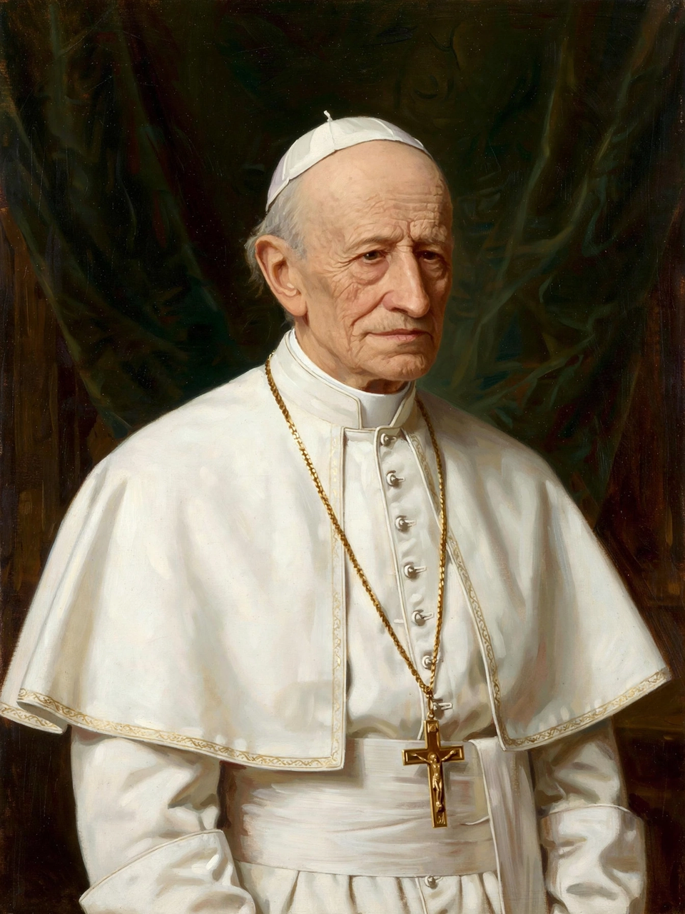

| Pope Leo XIII | |
 | |
| Born | Vincenzo Gioacchino Raffaele Luigi Pecci, 2 March 1810, Carpineto Romano, French Empire |
|---|---|
| Died | 20 July 1903 (aged 93), Apostolic Palace, Rome |
| Papacy began | 20 February 1878 |
| Papacy ended | 20 July 1903 |
| Predecessor | Pius IX |
| Successor | Pius X |
Pope Leo XIII (born Vincenzo Gioacchino Raffaele Luigi Pecci; 2 March 1810 – 20 July 1903) was head of the Catholic Church from 20 February 1878 until his death in 1903. His 25-year reign was the fourth longest in papal history. He is best known for the encyclical Rerum novarum (1891), which founded modern Catholic social teaching, and for reviving Thomist philosophy.
Pecci was born in Carpineto Romano, south of Rome, and educated by the Jesuits at Viterbo and at the Collegio Romano. Ordained a priest in 1837, he served as a papal diplomat and governor, then as Bishop of Perugia from 1846 to 1878, where he became known as a reforming and intellectually engaged bishop. He was created a cardinal in 1853 and, after the death of Pius IX, was elected pope in the conclave of 1878, taking the name Leo in honour of Leo XII.
Leo sought to reconcile the Church with modern culture and science after the confrontational final years of Pius IX. His encyclical Aeterni Patris (1879) restored the philosophy of Thomas Aquinas as the Church's official philosophical framework. He opened the Vatican Archives to scholars and encouraged historical research, while also issuing the biblical encyclical Providentissimus Deus (1893).
In Rerum novarum (1891), Leo addressed the condition of the working classes during industrialisation. The encyclical rejected both socialism and unrestricted capitalism, defended private property, affirmed workers' right to form unions, and argued that employers owed workers a wage sufficient to live in dignity — the root of the modern living wage doctrine in Catholic teaching. It became the foundation text of Catholic social teaching, developed further by Pius XI, John XXIII and later popes.
Leo XIII died on 20 July 1903 at the age of 93, the oldest pope in history at that time. He was the first pope to be filmed and to have his voice recorded. His intellectual openness and social teaching made him a bridge between the Church of the nineteenth century and the modern world.